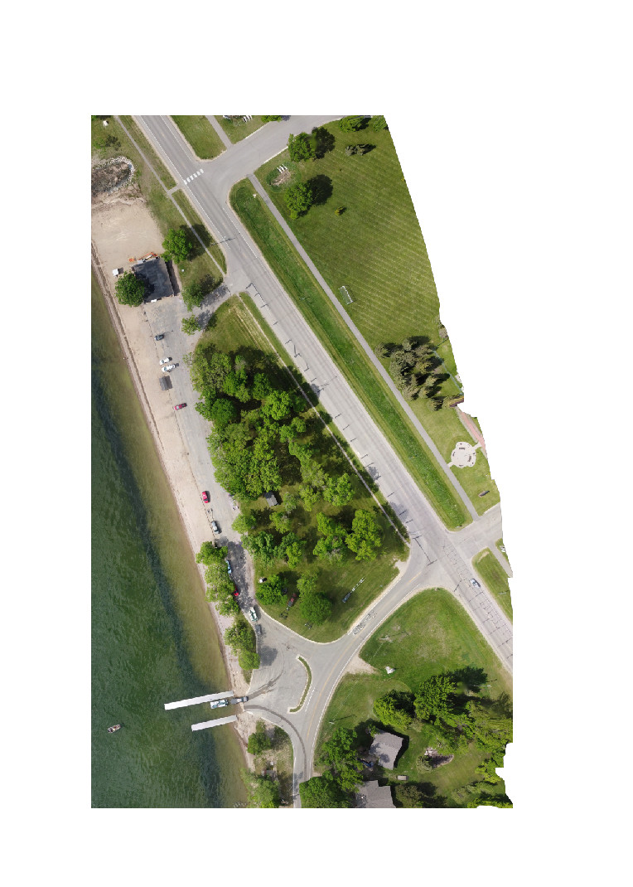

UAS Site Inspection
Lake Minnewaska Boat Launch
This video was recoded with a DJI Mini SE drone. After the flight, the GPS flight log was used to create a flight path overlay. The software that I used to accomplish this was QGIS and Garmin VIRB.

This orthomosaic was created is at the same site as the above video. It was created using drone deploy photogrammetry software. This flight was done as part of my personal hobby, but I do have a Section 107 Remote Pilot Certificate for use with projects.